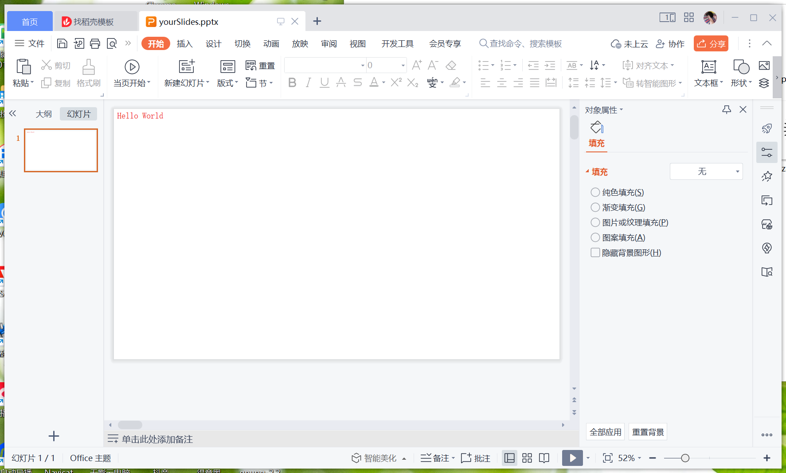

快速开始
本教程会引导您通过Java代码生成一个包含HelloWorld的PPT文件
引入Jar
您可以通过maven或者手动导入的方式引入jar包
Maven坐标【推荐】
<dependency>
<groupId>cc.pptshow</groupId>
<artifactId>pptshow</artifactId>
<version>1.3</version>
</dependency>
下载并手动导入【不推荐】
下载地址：https://s01.oss.sonatype.org/service/local/repositories/releases/content/cc/pptshow/pptshow/1.3/pptshow-1.3.jar
编写代码
新建一个名为 Main 的 Java class 文件，
将下面的代码拷贝到项目中之后运行，
你就获得了包含HelloWorld的PPT文件！
import cc.pptshow.ppt.domain.*;
import cc.pptshow.ppt.element.impl.*;
import cc.pptshow.ppt.show.PPTShow;
import cc.pptshow.ppt.show.PPTShowSide;
public class Main {
public static void main(String[] args) {
//新建一个PPT对象
PPTShow pptShow = PPTShow.build();
//新建一页PPT
PPTShowSide side = PPTShowSide.build();
//创建一个行内文本对象，文字设定为Hello World
PPTInnerText pptInnerText = PPTInnerText.build("Hello World");
//创建一个行内文本样式对象，让文本颜色为红色
PPTInnerTextCss pptInnerTextCss = PPTInnerTextCss.build().setColor("FF00000");
//绑定行内文本和样式对象
pptInnerText.setCss(pptInnerTextCss);
//通过行内文本创建一个行文本对象，并通过行文本对象创建文本对象
PPTText pptText = PPTText.build(PPTInnerLine.build(pptInnerText));
//在PPT页面中添加文本对象
side.add(pptText);
//在PPT里面添加PPT页面
pptShow.add(side);
//输出到文件
pptShow.toFile("C:/Users/qrp19/Desktop/test4.pptx");
}
}
生成文件
如果顺利的话，您会获得类似下图的文件
